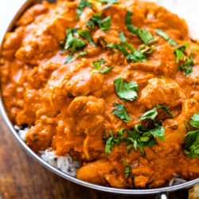

Butter chicken recipe

Ingredients
- 1 tbsp oil
- 1 tbsp butter
- 1 medium onion diced
- 1 tsp fresh ginger
- 2-3 cloves minced garlic
- 1.5 pounds boneless chicken breast (chunks)
- 4 tbsp tomato paste
- 1 tbsp garam masala
- 1 tsp chilli powder
- 1 tsp Fenugreek
- 1 tsp cumin
- 1 tsp salt
- 1/4 tsp black pepper
- 1 cup heavy cream
- cooked rice or naan
Steps
- Heat a large skillet or medium saucepan over medium-high heat. Add the oil, butter, and onions and cook onions down until lightly golden, about 3-4 minutes. Add ginger and garlic and let cook for 30 seconds, stirring so it doesn’t burn.
- Add the chicken, tomato paste, and spices. Cook for 5-6 minutes or until everything is cooked through.
- Add the heavy cream and simmer for 8-10 minutes stirring occasionally. Serve over Basmati rice or with naan